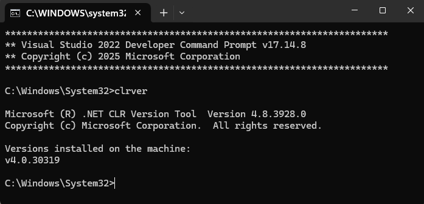
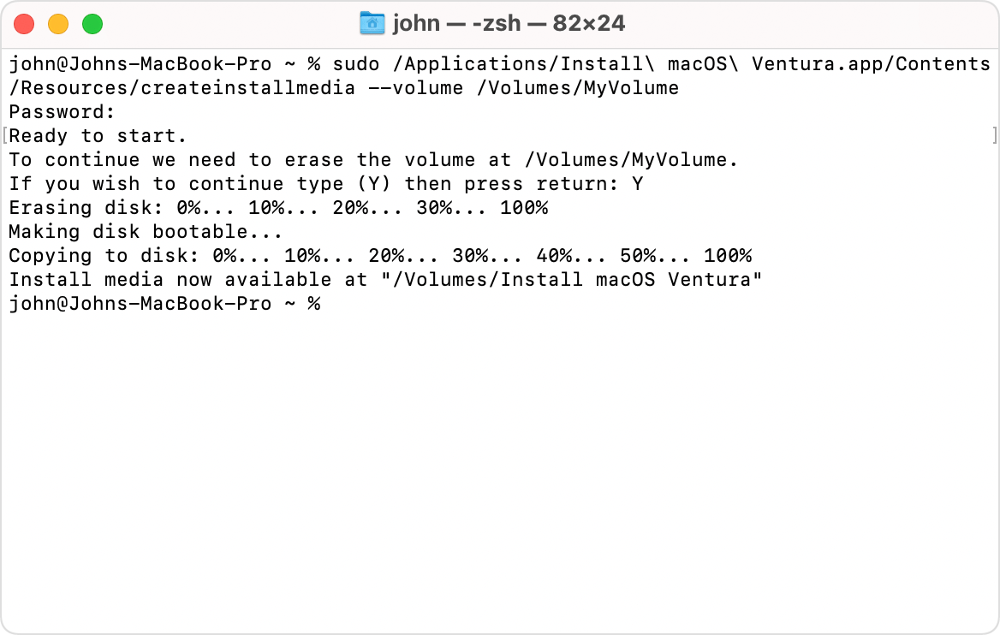
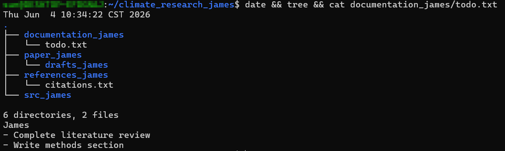

This tutorial introduces the command line interface (CLI), a way to control your computer by typing text commands, rather than clicking icons, on macOS/Linux (Unix) and Windows. Proficiency in the CLI is a foundational skill for business and non-engineering students enrolled in artificial intelligence and machine learning courses.


climate_research is the parent of src.src is a child of climate_research.~ on macOS/Linux, C:\Users\Username on Windows)./ on macOS/Linux, C:\ on Windows)./home/user/climate_research).src/main.py or ../references).Cmd + Space → type Terminal → EnterApplications → Utilities → TerminalWin key → type cmd → EnterWin + R → type cmd → EnterCtrl + Alt + T (Ubuntu & most distros)Terminal or Console in app menu| Action | macOS / Linux | Windows (Cmd) |
|---|---|---|
| List files | ls (or ls -la) | dir |
| Print working dir | pwd | cd |
| Move to directory | cd directory_name | cd directory_name |
| Move to parent | cd .. | cd .. |
| Action | macOS / Linux | Windows (Cmd) |
|---|---|---|
| Create directory | mkdir directory_name | mkdir directory_name |
| Create subdirectory | mkdir -p parent/sub | mkdir parent\sub |
| Copy directory | cp -r src dest | xcopy /E /I src dest |
| Delete directory | rm -rf directory_name | rmdir /s directory_name |
| Action | macOS / Linux | Windows (Cmd) |
|---|---|---|
| Create text file | touch file.txt | type nul > file.txt |
| Open in GUI editor | touch f && open -e f | notepad file.txt |
| View file contents | cat file.txt | type file.txt |
| Rename | mv old_name new_name | ren old_name new_name |
| Delete file | rm file.txt | del file.txt |
| Action | macOS / Linux | Windows (Cmd) |
|---|---|---|
| Display tree | tree | tree /F |
brew install tree or use find .. On Windows, /F shows files; without it, only folders are listed.
mkdir terminal_practice
cd terminal_practice# macOS/Linux
ls
ls -la
# Windows
dirInterpreting output: d = directory, - = file, l = symlink. On Windows: <DIR> = directory, number = file.
# Print current location
pwd # macOS/Linux
cd # Windows
# Move into a directory
mkdir documentation
cd documentation
# Move to parent directory
cd ..mkdir srcls or dir.
# macOS/Linux
mkdir -p paper/drafts
# Windows
mkdir paper\drafts# macOS/Linux
cp -r src src_backup
# Windows
xcopy /E /I src src_backupdocumentation → docs):
# macOS/Linux
mv documentation docs
# Windows
ren documentation docs# macOS/Linux
touch notes.txt
# Windows
type nul > notes.txt# macOS
touch notes.txt && open -e notes.txt
# Windows
notepad notes.txt# macOS/Linux
cat notes.txt
# Windows
type notes.txt# macOS/Linux
rm notes.txt
# Windows
del notes.txt# macOS/Linux
tree
# Windows
tree /FOn macOS, install via brew install tree or use find .. On Windows, /F shows files.
Setting up a Research Project Workspace: The practice root directory and all subdirectories must include your English name (e.g., james):
| Type | Example Name |
|---|---|
| Project root directory | climate_research_james |
| Subdirectories | src_james, output_james, paper_james/drafts_james, references_james, doc_james |
File in doc | todo.txt: first line is your name, then task list |
climate_research_[yourname], move into it.
src_, output_, paper_/drafts_, references_, doc_ subdirectories.
doc_[name]/todo.txt (name + task list), references_[name]/sources.txt.
doc_[name] → documentation_[name], sources.txt → citations.txt.
output_[name].
climate_research_[yourname], run:
# macOS/Linux
date && tree && cat documentation_[yourname]/todo.txt
# Windows (Cmd)
echo %date% %time% && tree /F && type documentation_[yourname]\todo.txtcd ..
Take a screenshot of the entire terminal window showing:
date && tree or Windows equivalent)climate_research_[yourname]
cd, cd ..).mkdir -p or Windows equivalent).